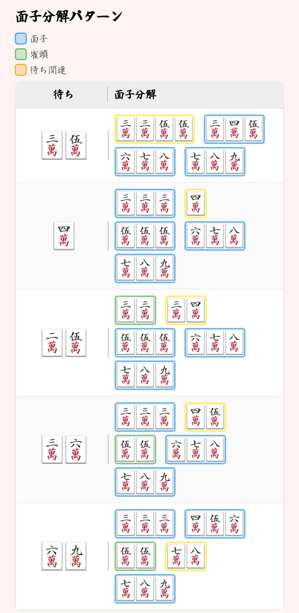
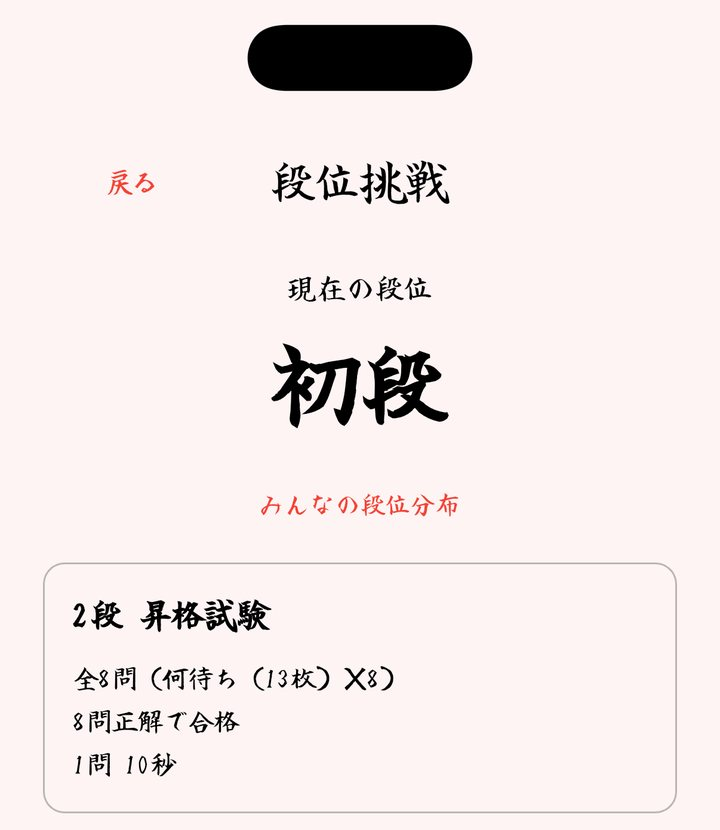
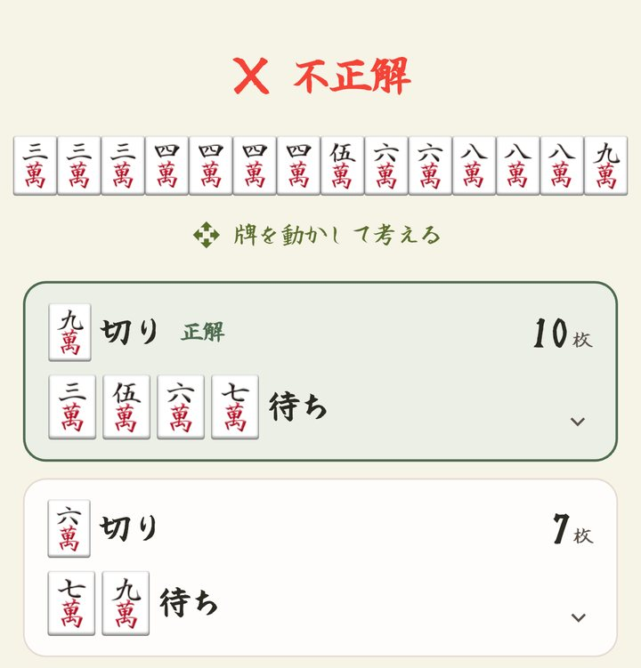
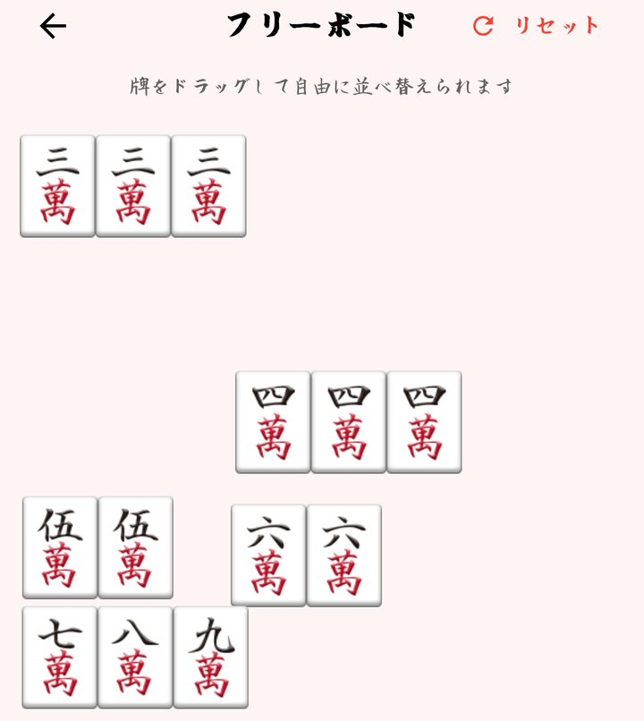
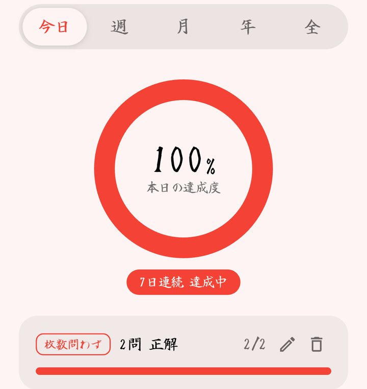
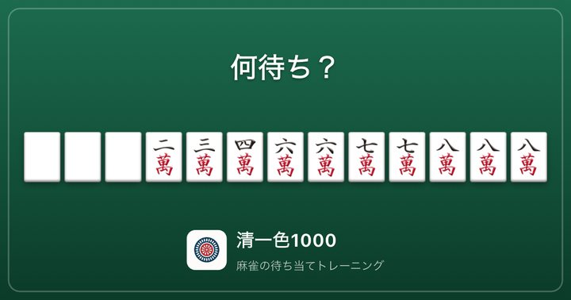
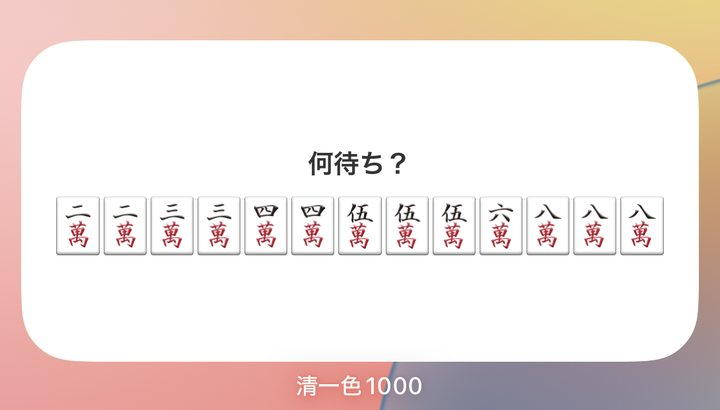

練習編
清一色1000
清一色の待ち当てと何切るに特化したトレーニングアプリ。
何待ち1,326問・何切る1,500問の計2,826問を収録。段位挑戦やタイムアタックで、清一色の読みの速さと正確さを鍛えます。
2,826収録問題
20段級位
3対応言語
主な機能

答え合わせで面子分解を表示
回答後に、待ちごとの面子分解パターンを面子・雀頭・待ち関連に色分けして表示。なぜその待ちになるのかを形で理解できます（無料版は1日5回、Proは無制限）。

段位挑戦
10級から十段までの昇格試験に挑戦。試験後は1問ずつ振り返れて、全ユーザーの段位分布も見られます。

何切るモード
11枚・14枚の聴牌形から、いちばん広い待ちになる打牌を選ぶ練習。待ちの枚数と点数で答え合わせします。

フリーボード
出題中の手牌をドラッグで自由に並べ替えて、面子の切り分けを試しながら考えられます。

目標とヒートマップ
1日の目標問題数を決めて、達成率と連続達成日数を記録。週・月・年の活動もひと目で分かります。

シェアカード
問題やタイムアタックの結果を画像にして、SNSにそのまま投稿できます。

ホーム画面ウィジェット
1時間ごとに問題が切り替わるウィジェット。タップするとその問題をすぐに解けます。
ほかにも
- 01
タイムアタック
持ち時間60秒、正解ごとに+3秒。毎週月曜にリセットされる週間ランキングで競えます。
- 02
牌姿を作る
自分で組んだ手牌の待ちと点数（ロン・ツモ）を表示。保存して後から見返せます。
- 03
縦画面にも対応
縦・横・自動から画面の向きを選べます。日本語・英語・中国語に対応。